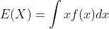
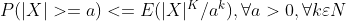
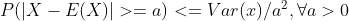
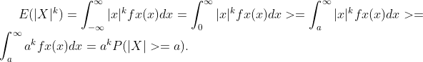
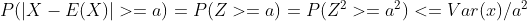

Researches about pure theory (T)
T15. Try to understand the general idea of the Lebesgue-Stieltjes integral and why it is useful concept and notation in Theory of ProbabilityResearches about applications (A)
A11. Consider a general scheme ad the simulation of previous homework and simulate the distribution of p = SUM(xi) , where xi are Bernoulli(lambda/n), with success probability lambda /n, where lambda is a user constant ("arrival rate").Researches about theory relevant to applications (TA)
-T15.
We have studied that we can calculate the Expected Value of a continous random variable X from this formula:

We can calculate probabilities from a continuous random variable thanks to CDF (cumulative distribution function).
Lebesgue-Stieltjes integration give us an alternative way to calculate the probability assigned to an interval:
Computing a "normal" integral is like computing the area under the function curve. We divide the area in many vertical rectangles, the sum of all the areas of all
the rectangles is our integral calculation. This technique is called Riemann integration.
This way of calculating the integral has problems:
- The function f must be continuous
- Difficult to expand to higher dimensions
The idea of Lebesque was to split the integral along the range or the y-axis instead of the x-asis.
Lebesgue-Stieltjes integration generalizes both Riemann and Lebesgue integration,
preserving the many advantages of the former in a more general measure-theoretic framework.
The Lebesgue-Stieltjes integral is the ordinary Lebesgue integral with respect to a measure known as
the Lebesgue-Stieltjes measure, which may be associated to any function of bounded variation on the real line.
In this way both in the continous and discrete world the integration domain remains continuos making the integral defined in either cases.
T16.
The probability of an interval have lots of properties two of them are:
- Markov’s inequality. If X is a non-negative random variable and a > 0, then the probability that X is at least a is at most the expectation of X divided by a:

- Chebyshev’s inequality. It uses the variance to bound the probability that a random variable deviates far from the mean:

Let's talk now about the law of large numbers (LLN).
It is a theorem that describes the results of performing the same experiment a large number of times.
According to this law, the average of the results obtained from a large number of trials should be close to the expected value and tends to
become closer and closer to the expected values as more trials are performed.
LLN can be easily proven through Markov’s inequality:

If X is discrete we have to replace the integrals above with sums.
LLN can also be proven by Chebyshev Inequality:

A11.
The application allows the generation of n executions with success probability lambda / n.
The graph on the left shows the distribution, while the graph on the right shows the "interarrival times".
Source code!